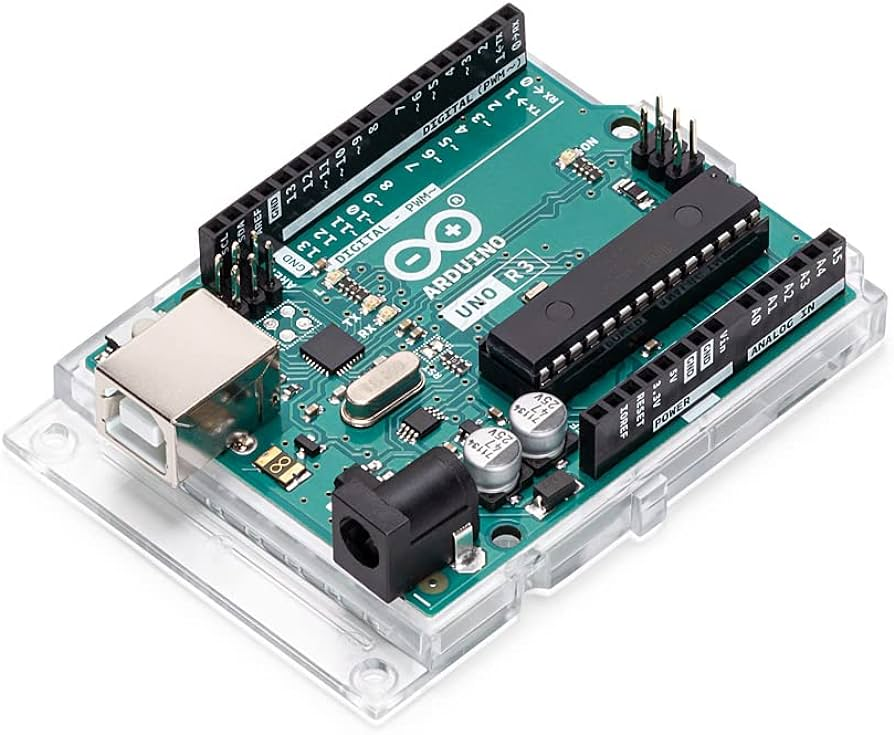
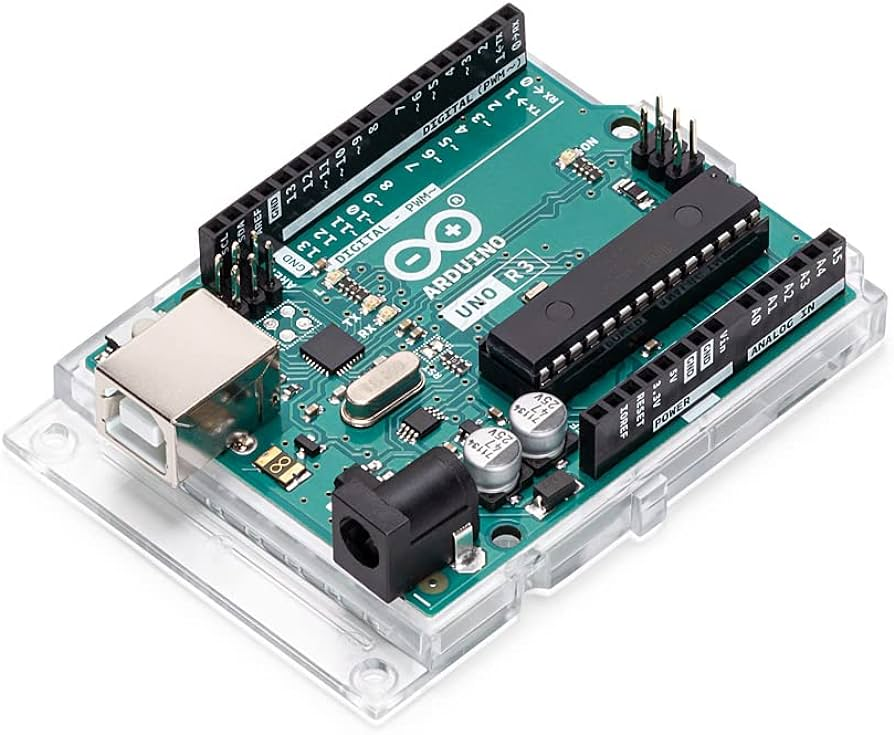

Glimpo reimagines the classic Plinko game as a vibrant, arcade-style digital experience, combining Unity physics, Arduino-controlled LEDs to create an immersive, interactive game that blends virtual and physical elements. Using neon visuals, score tracking, and tactile feedback, the redesign offers a more accessible, portable, and engaging version of the original wooden game.
For our final project, we transformed the classic wooden Plinko game into a digital-meets-physical arcade-style experience. The original game involves dropping a ball from the top of a peg-filled board, where it bounces unpredictably until it lands in one of several slots at the bottom. We recreated this mechanic in Unity, using physics simulations to model gravity, bounce, and collision behaviors.
To elevate the experience beyond the screen, we added a physical component using Arduino and Uduino. When the virtual ball lands in a slot, a corresponding LED light positioned around the board lights up in real-time. This creates a visual feedback loop between the digital simulation and the physical environment.
The design aesthetic is inspired by neon arcade games, using vibrant colors and glowing effects to match the real-world LED elements. We wrote multiple Unity scripts to manage ball spawning, movement, removal after landing, and syncing with LED triggers. A scoring system was also implemented to give the user a goal and challenge engagement.
This project is not only a redesign of a familiar game but also an exploration of how physical computing and digital environments can merge in order to create more immersive and interactive experiences in games today. By minimizing the size of the game and eliminating the need for physical pieces or large wooden structures, we made the game more accessible, compact, and playful.


 
